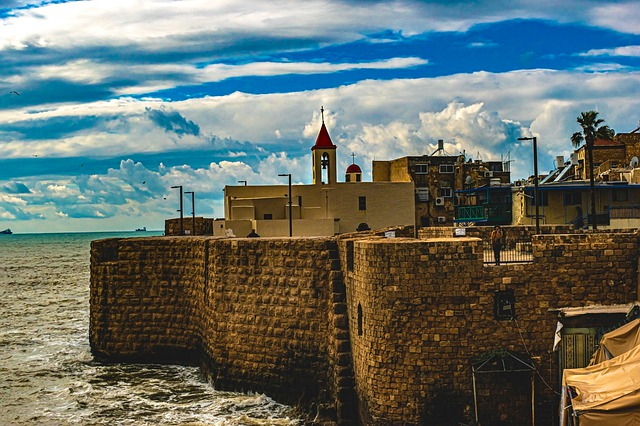

مــديــنــة عكـــا
مدينة عكّا هي من المدن الفلسطينية العربية الإسلامية التاريخية.
و تطل مباشرة على البحر الأبيض المتوسط من الرأس الشمالي لخليج حيفا, و إلى الغرب من منطقة الخليل.
و هي تبعد نحو 179كم عن مركز عاصمة فلسطين مدينة القدس.
التسمية تُعد عكا مدينة كنعانية ثم فينيقية،
ومعنى الاسم (الرمل الحارّ)،
وجاء في معجم البلدان (4/144) من القبائل الكنعانية التي نزلت بلاد الشام-الجرجاشيون،
وكانت منازلهم شرقي بحيرة طبريا - وقد ذكر بعضهم انهم هم الذين أسسوا عكا. اُطلق عليها زمن الإغريق وفي فترة حكم تلمي الثاني
نسبة إلى بطليموس(Ptolemais).

نـــبـــذة عـــن تــــاريـــخ عكـــا
يذكر التاريخ أن أول من استوطن مدينة عكّا هم قبائل الكنعانيين, حيث سكنوا منطقة تلّ عكّا حاليًا قبل نحم 4000 سنة.
و هي واقعة في الجزء الشرقيّ من المدينة, و في القرنين: التاسع عشر, و العشرين, خضعت عكّا لحكم الفراعة.
و استمرت على هذا النحو إلى أن دخلها الفينيقيون, فجعلو منها أهم مدن المنطقة.
و ذلك في مطلع الألف الأول قبل الميلاد, وقعت عكّا تحت احتلال الآشوريين الذين هزموا فيما بعد على يد البابليين.
ثم خضعت المدينة بعد ذلك لحكم الفرس فجعلوا منها قاعدة انطلاق لحربهم على المصريين.
و من الجدير بالذكر أنّ عكّا حظيت في عهدهم يأهمية اقتصادية, و تجارية كبيرة؛
حيث أصبح ميناؤها في القرن الرابع قبل الميلاد ضمن قائمة موانئ شرق البحرالأبيض.
وقد شهدت مدينة عكّا الفتح الإسلامي في عام 636م, في عهد الخليفة عمر بن الخطاب رضي الله عنه.
حيث استمر الحكم الإسلامي لعكّا نحو 470 سنة, إلا أن أهمية المدينة قلت بعد أن انتقل حكم الباسيين إلى دمشق في عام 750م.
و من ثم تعاقب على حكم عكّا كلُّ من الفاطميين, و السلاجقة, و الصليبيين.
ثم خضعت في عام 1517م لحكم العثمانيين الذين أعادوا للبلاد, و للمدينة مكانتها الحقيقية؛ إذ حظيت يتطور, و ازدهار ملحوظ.
و قد استمر حكمهم للمنطقة حتى عام 1918م, حيث خضعت المدينة للانتداب البريطانيّ,
و في عام 1948م, سيطر عليها الاحتلال الإسرائيليّ بعد حرب النكبة.